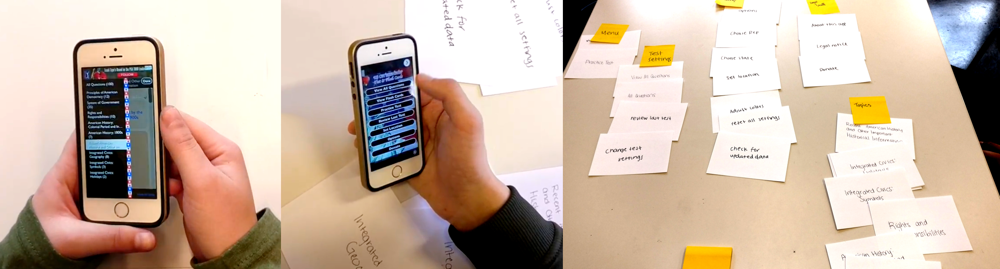
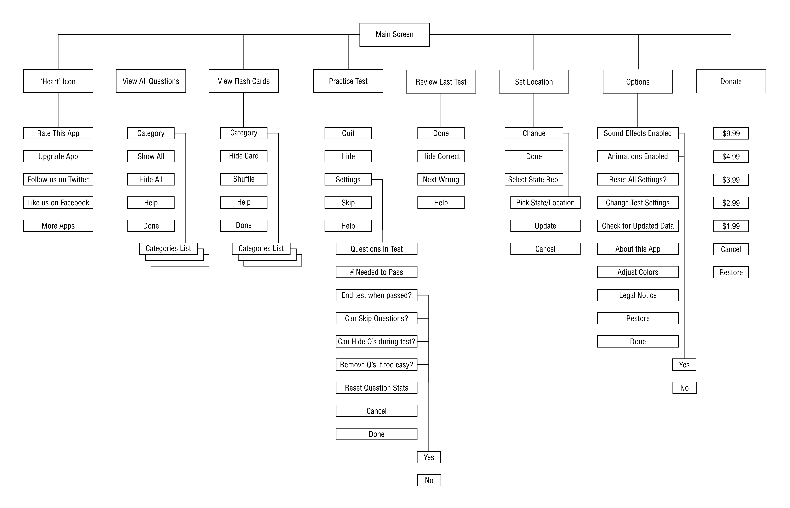
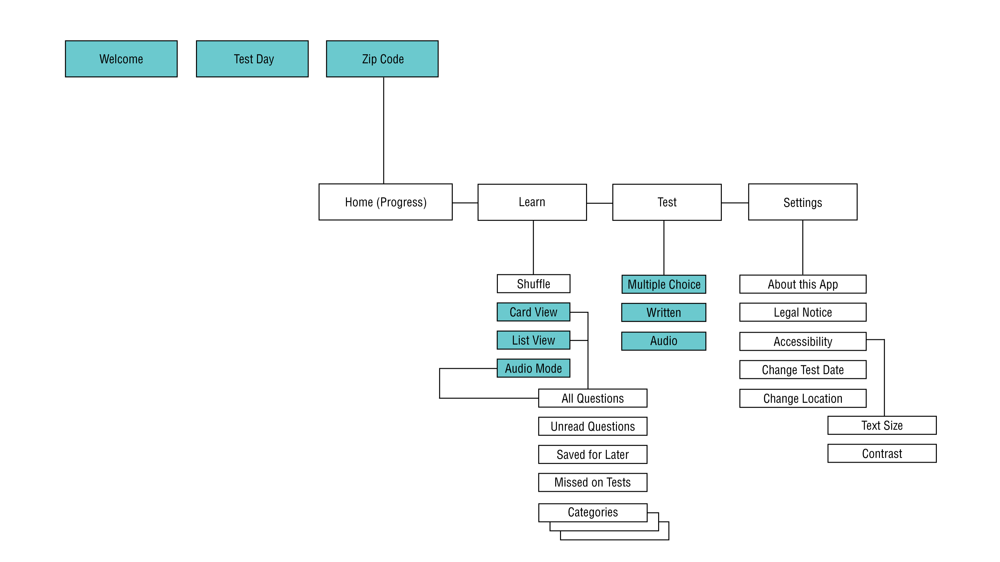
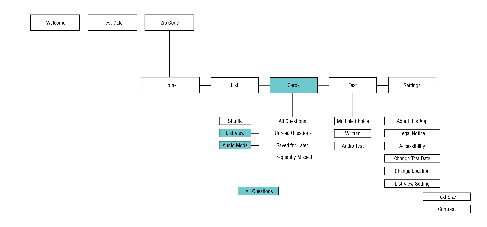

WHAT IS THE CITIZENSHIP APP?
The free app enables users to practice for the US Civics test, which is part of the naturalization process to becoming a US Citizen. There are 100 civics questions on the test. The USCIS (US Citizenship and Immigration Services) officer will ask applicants ten of these questions at random.
FINAL DESIGN
We are currently refining some visual details and animations. The final designs will be released by the end of March 16.
RESEARCH
We researched demographics about the test takers, interviewed 3 people who have taken the citizenship test, conducted 2 usability testings and card sorting.
DECIDE ON IMPROVEMENTS
As a team, we decide to focus on our redesign on five main improvements:
■ Reorganize the information hierarchy to add clarity
■ Allow users to track progress and see improvements
■ Enable fully simulation of the verbal test environment
■ Create consistencies among interactions thoroughout the app
■ Revamp the visual design to add beauty and credibility
START WITH THE FLOW
This is the flow chart of the original app. The main screen has way too much information so it looks too overwhelming. We decide to add more depth to the app structure.
After multiple iteractions, we decide on the first new flow for the app where we added an onboaring, an audio overview and different types of tests.
THE "LEARN" SECTION
I took over the "learn" section in the app. I wireframed to explore the flow of the section and the UI of each segment.

MEDITATE MORE ON THE FLOW
As a team, we decided to get rid of the categories and that we will separate card and list/audio after many rounds of feedback, discussion and testings.
THE VISUAL STRUGGLE
After our settlement on the final flow, the struggle now is to explore the actual visual details of the UI and overall identity of the app. The screens marked by pink borders are made by me.

FINAL THOUGHTS
It is my first time working in a team of four designers. Teamwork is a lot more challenging when there are simply a lot more opinions but the productive discussions are what lead to the high quality of work in the end.
It is also my first time working in a team which one of my teammates cried after our first critique but we as a group ended up submitting all of us can be proud of. I learned to hold back my emotions that are negative to the team but try my best to be positive and supportive.